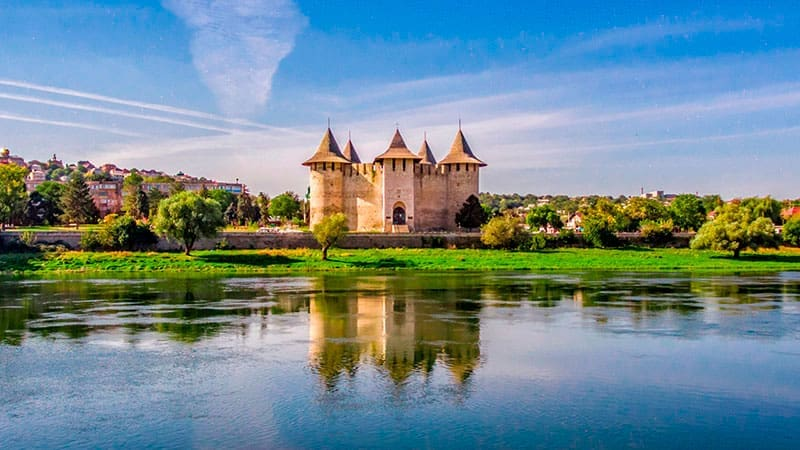
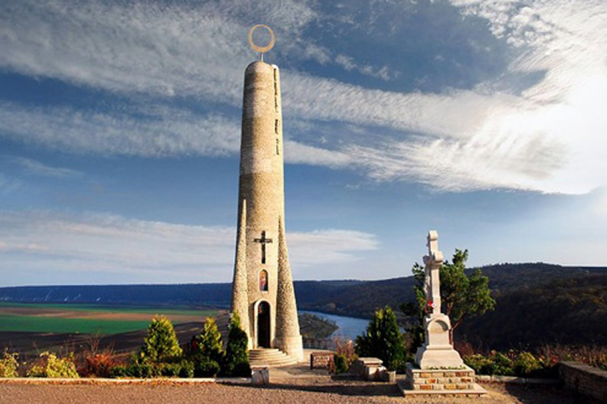

Достопримечательности
Сорокская крепость

📜 Архитектурные детали Сорокская крепость является ярким примером перехода от средневековых оборонительных сооружений к фортификациям, приспособленным для использования огнестрельного оружия. Крепость имеет пять башен: четыре круглые по периметру и одну над входом. Такое расположение позволяло защитникам эффективно контролировать подступы к сооружению. Внутренний двор окружён жилыми и хозяйственными помещениями, где располагались казармы, склады оружия и продовольствия. ⚔️ Военное значение Крепость служила важным оборонительным пунктом на северо-восточной границе Молдавского княжества, защищая его от набегов татар и османских войск. Благодаря выгодному расположению на берегу Днестра, она контролировала переправы через реку и торговые пути между Восточной и Центральной Европой. Сооружение выдержало множество осад и оставалось ключевым стратегическим объектом на протяжении нескольких столетий.
Свеча Благодарения

📖 Культурное и духовное значение Свеча Благодарения (Lumânarea Recunoștinței) символизирует благодарность всем поколениям, которые сохранили язык, культуру и веру молдавского народа. Памятник посвящён не только известным историческим личностям, но и простым людям, внёсшим вклад в развитие страны. 🏗️ Архитектура и символизм Высота сооружения — около 29,5 метров, что делает его одним из самых высоких памятников в Молдове. Форма свечи символизирует свет знаний, духовности и памяти. Внутри памятника находится небольшая часовня, где посетители могут помолиться и зажечь свечу. Подъём по многочисленным ступеням к памятнику символизирует путь духовного очищения и стремление к высшим ценностям. 🌄 Панорамные виды Со смотровой площадки открываются впечатляющие виды на реку Днестр и окрестности. Это делает памятник популярным местом для фотографов и туристов. Особенно живописно это место выглядит на рассвете и закате, когда белый камень памятника окрашивается в тёплые оттенки.